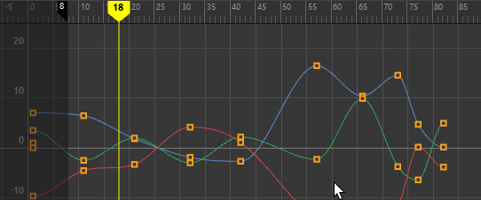

可以在“首选项”(Preferences)窗口中“设置”(Settings)类别下方的“动画”(Animation)子类别中设置以下首选项。
另请参见编辑动画首选项。
若要恢复出厂默认设置，请在此窗口中选择“”(Edit > Restore Default Settings)。请注意，这将重置“首选项”(Preferences)窗口中每个类别的首选项。
解算(Evaluation)
选择解算模式可提高播放性能。
- DG
- 对您的场景使用基于依存关系图的解算模式。（另请参见依存关系图。）在 Maya 2016 之前，这是默认的解算模式。
- 串行(Serial)
- 使用解算管理器，但是将解算限制到单个核心（串行解算）。使用“串行”(Serial)可排除场景故障，因为它使场景保真度优先于性能，以便您可以找出解算错误。
注： 与“DG”模式相比，有时场景在“串行”(Serial)解算模式下运行得更慢。这是因为与“DG”模式相比，“串行”(Serial)模式对更多的节点解算。由于此详细解算，如果场景在“串行”(Serial)模式下看起来不正确，则它不大可能在“并行”(Parallel)模式下正常工作。
有时“串行”(Serial)模式下的不正确解算是由自定义插件导致的。
- 并行(Parallel)
- 并行解算并使用所有可用的核心对场景解算。如果此模式导致场景问题，则禁用它并返回到上一标准：DG 解算模式。
请参见分析场景以提高性能。
此模式在默认情况下处于活动状态。 - GPU 覆盖(GPU Override)
- 与解算管理器一起在“串行”(Serial)或“并行”(Parallel)解算模式下加速变形。如果场景具有标准 Maya 变形器并且网格几何体是密集的，则这可以提高性能。结果将基于场景中的变形器和网格密度而变化。
注： “GPU 覆盖”(GPU override)仅适用于 Viewport 2.0，对 OSX 上的 Quadro 4000 显卡不起作用。
- 有关“GPU 覆盖”(GPU override)的技术说明，请参见使用并行 Maya。
- 在解算图中包括控制器(Include Controllers in Evaluation Graph)
- 构建时在解算管理器中激活/禁用预填充控制器机制。
有关这些模式的工作方式和其他性能优化提示的更多详细信息，请参见使用解算管理器提高性能。
自动关键帧(Auto Key)
- 自动关键帧(Auto Key)
-
指定在您更改以前已设置动画对象的属性值时，Maya 是否将在这些属性上自动设置关键帧。此首选项具有与“动画”(Animation)控件的“自动关键帧切换”(Auto Keyframe Toggle)按钮
 （位于“动画首选项”(Animation Preferences)按钮
（位于“动画首选项”(Animation Preferences)按钮  的旁边）相同的效果。默认情况下，此选项处于禁用状态。
注： 启用后，“自动关键帧”(Auto key)将读取通过 HIK 绑定创建的设置组关键帧对象的最小化旋转属性。
的旁边）相同的效果。默认情况下，此选项处于禁用状态。
注： 启用后，“自动关键帧”(Auto key)将读取通过 HIK 绑定创建的设置组关键帧对象的最小化旋转属性。
针对角色集(On character sets)
这些选项仅在启用“自动关键帧”(Auto Key)时才可用。
有关详细信息，请参见角色集。
- 为修改的属性设置关键帧(Key Modified Attributes)
-
仅为已修改的属性设置关键帧。
- 为所有属性设置关键帧(Key All Attributes)
-
为所有属性设置关键帧，无论它们是否已修改。
旋转插值(Rotation Interpolation)
若要设置旋转插值选项，请参见设置曲线的旋转插值。
- 新曲线的默认值(New curve default)
-
指定创建曲线时使用的旋转插值的类型。这些选项与曲线图编辑器“曲线”(Curves)菜单的更改旋转插值(Change Rotation Interp)菜单项中提供的选项相同。有关旋转插值的详细信息，请参见 Maya 中的动画旋转。
- 独立 Euler(Independent Euler)
-
使用三个独立的角度（表示围绕 X、Y 和 Z 轴旋转）、顺序或旋转来计算旋转。在该模式中，为给定的节点定义旋转的曲线以 Euler 角度表示，插值在 Euler 空间，内的每条曲线中独立执行，且根据您的判断可以使用关键帧，这些关键帧与该节点中的其他同级旋转曲线不同步。此外，还可以为单个旋转坐标设置动画。这是默认设置。
- 同步 Euler(Synchronized Euler)
-
在彼此锁定、但在 Euler 空间中执行关键帧之间使用插值的同级曲线中创建曲线。
它对于保持旋转关键帧同步十分有用，因为旋转是三个单独旋转值的合成。仅删除曲线中的一个关键帧时，有可能会在插值中产生明显的异常效果。
- 四元数球面线性插值(Quaternion Slerp)
-
插值是使用球形线性插值计算得出的，并且与输入曲线的切线无关。
- 四元数立方(Quaternion Cubic)
-
插值是使用四元数立方插值（平方）计算得出的，并且与输入曲线的切线无关。
- 四元数切线从属(Quaternion Tangent Dependent)
-
插值是使用基于输入曲线切线的四元数插值计算得出的。例如，如果切线为线性，则 Maya 将使用球形线性插值（球面线性插值）。此外，如果切线已钳制，则 Maya 将使用立方插值（平方）。
- 新 HIK 曲线的默认值(New HIK curve default)
-
用于设置新 HIK 曲线的默认旋转插值类型。该下拉列表包含与“新曲线的默认值”(New curve default)首选项（如上所列）相同的一组旋转插值选项。HIK 曲线的默认值是“四元数球面线性插值”(Quaternion Slerp)。
切线(Tangents)
切线确定曲线分段进出关键帧时的状态。
- 默认切线权重(Default tangent weight)
-
（以前，在先前版本 Maya 中称为“加权切线”(Weighted tangents)）
“默认切线权重”(Default tangent weight)表示切线对动画曲线分段的影响程度。选择“加权切线”(Weighted tangents)或“非加权切线”(Non-weighted tangents)：- 加权切线(Weighted tangents)
-

加权切线(Weighted tangents)：您可以更改角度和长度
- “加权切线”(Weighted tangents)具有较长的控制柄，可以快速直观地编辑切线的影响和角度，类似于基于向量的图形软件中的 Bezier 样式行为。“加权切线”(Weighted tangents)可用于操纵关键帧上的两条切线，使曲线的弧形在两侧保持平衡。
- 非加权切线(Non-weighted tangents)
-

非加权切线(Non-weighted tangents)：您可以更改角度，但不能更改长度
- “非加权切线”(Non-weighted tangents)具有简单的控制柄，仅控制切线的角度。
请参见编辑切线。
- 默认入切线(Default in tangent)
-
指定默认的入切线类型。“入切线”(In Tangent)设置控制动画分段在关键帧前的形状。
选项包括：
- 自动(Auto)
-
（默认）“自动入切线”将当前的关键帧值与上一个关键帧值进行比较，并在曲线分段高于或低于这些关键帧值时展平曲线分段。（另请参见曲线图编辑器“切线”(Tangents)菜单中的“自动切线”(Auto Tangents)。）
- 样条线(Spline)
-
样条线切线在关键帧之前平滑地圆化动画曲线。如果关键帧的出切线也是样条线，则曲线的切线是共线的（即角度相同）。这样可以确保动画曲线平滑地进出关键帧。
- 线性(Linear)
-
线性切线在关键帧前将动画曲线创建为直线。
- 钳制(Clamped)
-
钳制切线在关键帧前平滑地圆化动画曲线（类似于样条线选择），除非下一个关键帧非常接近。如果是这样，则入切线和上一个关键帧的出切线均为直线（类似于线性选择），从而使关键帧之间的动画曲线变为直线。
- 平坦(Flat)
-
平坦切线类型将关键帧前的切线设置为水平，坡度为 0 度（平面）。
- 高原(Plateau)
-
高原切线类型使动画曲线缓入和缓出其关键帧，展平出现在等值关键帧之间的曲线分段，展平其曲线中出现高山和峡谷的点的关键帧，以及展平其曲线上的第一个和最后一个关键帧。
- 默认出切线(Default out tangent)
-
指定默认的出切线类型。“出切线”(Out Tangent)设置控制动画曲线紧挨关键帧后的形状。
选项包括：
- 自动(Auto)
-
（默认）“自动出切线”将当前的关键帧值与下一个关键帧值进行比较，并在曲线分段高于或低于这些关键帧值时展平曲线分段。（另请参见曲线图编辑器“切线”(Tangents)菜单中的“自动切线”(Auto Tangents)。）
- 样条线(Spline)
-
样条线出切线在关键帧后平滑地圆化动画曲线。如果关键帧的入切线也是样条线，则曲线的切线是共线的（即角度相同）。这样可以确保动画曲线平滑地进出关键帧。
- 线性(Linear)
-
线性切线在关键帧后将动画曲线创建为直线。
- 钳制(Clamped)
-
指定在关键帧后平滑地圆化动画曲线（类似于样条线选择），除非下一个关键帧非常接近。如果是这样，则出切线和上一个关键帧的入切线均为直线（类似于线性选择），从而使关键帧之间的动画曲线变为直线。
- 平坦(Flat)
-
平坦切线类型将关键帧后的切线设置为水平，坡度为 0 度（平面）。
- 阶跃(Stepped)
-
阶跃切线类型强制动画曲线将其值从一个关键帧保留到下一个关键帧。
- 高原(Plateau)
-
高原切线类型使动画曲线缓入和缓出其关键帧，展平出现在等值关键帧之间的曲线分段，展平其曲线中出现高山和峡谷的点的关键帧，以及展平其曲线上的第一个和最后一个关键帧。
动画融合(Animation Blending)
通过“动画融合”(Animation Blending)首选项，可以指定能在对象连接之间出现的融合类型。例如，启用“始终与现有连接融合”(Always blend with existing connections)后，即可为单个对象设置动画和约束该对象。
混合(Blend)
- 始终与现有连接融合(Always blend with existing connections)
-
启用该首选项后：
- 可以移动具有现有连接（如动画和约束）的对象或为这些对象设置关键帧。
- 在为某个对象设置关键帧或约束时，Maya 会在该对象的现有连接与新关键帧或约束之间插入 pairBlend 节点。
- 对于所有新约束，默认情况下会禁用“锁定输出”(Lock Output)属性。
- “始终与现有连接融合”(Always Blend with Existing Connections)在默认情况下处于启用状态。
- 与除约束外的所有连接融合(Blend with all except constraints)
-
启用该首选项后：
- 只能为不会受约束的对象设置关键帧。
- 在为某个对象设置关键帧时，Maya 会在该对象的现有连接与新关键帧之间插入 pairBlend 节点。
- 不能对具有连接的对象进行约束。
- 对于所有新约束，默认情况下会启用“锁定输出”(Lock Output)属性。
- 从不与现有连接融合(Never blend with existing connections)
-
启用该首选项后：
- 只能为没有任何现有连接的对象设置关键帧。
- Maya 不会插入 pairBlend 节点以混合对象连接。
- 对于所有新约束，默认情况下会启用“锁定输出”(Lock Output)属性。
AnimBlendNode
AnimBlendNode 选项可用于指定在其中一个源断开连接时能在对象连接之间出现的融合类型。如果您要使用来自其余连接的输入作为输出，此选项将很有用。即，如果 inputA 的连接已断开，则使用 inputB 的结果作为输出。这会将连接已断开的输入设置为 0，而非当前值。
只有当您将特定 animLayer 上的 paramCurve 节点显式断开连接或删除时才适用。
- 在断开输入时重置为当前值(Reset to Current Value on Broken Input)
- 保留实际值。
- 在断开输入时重置为身份(Reset to Identity on Broken Input)
- 将值重置为所谓的“身份”。在大多数情况下，此值为 0（缩放除外，其值为 1）。
曲线图编辑器(Graph Editor)
- 将值捕捉到相邻关键帧(Snap Value to Adjacent Keys)
- 启用该选项时（默认情况下），当您在“曲线图编辑器”(Graph Editor)中编辑曲线时，具有类似值的相邻关键帧会自动对齐。如果希望类似的相邻关键帧捕捉到相同的值，请启用该首选项。
- 按住鼠标左键并拖动可移动选定关键帧(Left-dragging moves selected keys)
- 启用此选项后（默认），单击一下即可拖动，以在图表视图区域中移动选定关键帧。
- 禁用此选项后，如果不希望在选择区域靠近关键帧或切线时意外移动关键帧（在使用密集关键帧/切线网络时会发生这种情况），则单击鼠标左键仅选择关键帧会很有用。
- 如果您熟悉其他 Autodesk 应用程序（如 MotionBuilder）中的关键帧编辑工作流，则启用此选项可能更好。
- 使用恒定衰减(移动和缩放除外)(Use Constant Falloff except for Move and Scale)
- 激活此选项可对“移动”(Move)和“缩放”(Scale)以外的工具使用恒定衰减。
- 这允许先前仅在经典（Maya 2022 之前）曲线图编辑器中的行为。
- 显示资产(Display Assets)
- 如果要在大纲视图中显示资产容器，请激活此选项。默认情况下，此选项处于禁用状态。
-
启用此选项后，将在以下大纲视图中显示资产：

- 同时也将在以下关系编辑器中显示资产：
-
注： 如果在激活“显示资产”(Display Assets)选项时“曲线图编辑器”(Graph Editor)处于停靠状态，则不会显示此编辑器。从用户界面中取消停靠“曲线图编辑器”(Graph Editor)，然后重新停靠它以使更改生效。（有关详细信息，请参见停靠和取消停靠窗口和面板。）
- 堆叠视图间距(Stacked View Spacing)
- 加宽或缩窄在堆叠视图中以堆叠形式显示曲线的水平“通道”。默认值为 0.2。
- 自动框显(Auto Frame)
- 自动调整图表视图，使其适配显示与一个或多个选定对象相关联的动画曲线。此选项仅调整以适配 Y 轴视图。若要同时框显 X 轴和 Y 轴，请激活此选项和下面的“自动框显两个轴”(Auto Frame both Axes)选项。
- 自动框显两个轴(Auto Frame both Axes)
- 同时在 X 轴（时间）和 Y 轴（值）上自动框显图表视图。仅当“自动框显”(Auto Frame)选项（如上所述）已激活时，此选项才可用。
提示： 可以从“曲线图编辑器”(Graph Editor)的“视图”(View)菜单激活此选项和“自动框显”(Auto Frame)选项。
- 缩放时自动调整关键帧大小(Auto-adjust key size on zoom)
-
缩放时自动调整关键帧大小(Auto-adjust key size on zoom)：启用
- 启用此选项后，在“曲线图编辑器”(Graph Editor)图表视图中进行缩放时，“曲线图编辑器”(Graph Editor)关键帧的大小将与曲线保持一致。如果取消选中此选项，则无论缩小多远，关键帧的大小都将保持不变。
-
缩放时自动调整关键帧大小(Auto-adjust key size on zoom)：禁用
- 关键帧大小(Key Size)
-
可用于控制“曲线图编辑器”(Graph Editor)图表视图中所显示的关键帧的大小。此关键帧大小是占原始关键帧大小（100% 或值 1）的百分比。可以在 40% (0.4) 和 200% (2) 之间缩放关键帧。

-
提示： 使用以下命令可超出默认大小设置：animCurveEditor -edit -keyScale 0.8 graphEditor1GraphEd;
- 切线控制柄大小(Tangent handle size)
-
调整切线控制柄大小
- 输入值或使用滑块使切线控制柄变大或变小。
- 切线线宽(Tangent Line thickness)
-
调整切线臂大小
- 输入值或使用滑块使切线臂变粗或变细。
- 最小关键帧选择大小(Min key selection size)
- 用于设置选择区域边界以选择关键帧。如果在图表视图中拖动选择时无意中包括关键帧，则更改此设置很有用。在处理包含密集动画的场景，并且“曲线图编辑器”(Graph Editor)使用减小的大小时，建议使用此设置减小边界大小，以使选定关键帧更加精确。
- 在光标处缩放(Zoom on cursor)
- 启用此选项可基于光标的位置放大“曲线图编辑器”(Graph Editor)图表视图。禁用此选项可恢复为先前的默认设置，该设置基于场景中整个动画的中心。
摄影表(Dope Sheet)
“摄影表编辑器”(Dope Sheet Editor)的设置
- 在光标处缩放(Zoom on cursor)
- 启用此选项可基于光标的位置放大“摄影表编辑器”(Dope Sheet Editor)视图区域。禁用此选项可恢复为先前的默认设置，该设置基于场景中整个动画的中心。
时间编辑器(Time Editor)
以下设置与“时间编辑器”(Time Editor)相关。
- 粒度(Granularity)
- 用于设置时间编辑器要设置动画的最小属性数。例如，设置为 1 将为每个对象创建单独的片段 TRS/插值器节点，而设置为 100 则会为最多 100 个对象创建单个片段 TRS/插值器节点。
- 使用“时间编辑器粒度”(Time Editor Granularity)设置可以在默认设置执行缓慢时调整时间编辑器的性能。在时间编辑器中，非常大的场景可能会创建许多 DG 节点，进而导致出现性能问题。“时间编辑器粒度”(Time Editor Granularity)设置可用于调整“粒度”，从而创建更少但更大的节点。
- 默认设置为 200。
- 捕捉容差(Snap tolerance)
- 设置希望片段粘附到轨迹上的最近对象的精确度。请参见时间编辑器工具栏主题中的“切换捕捉”(Toggle Snap)。
- 最小片段宽度(Minimum clip width)
- 用于指定缩小时片段显示在轨迹上的最小屏幕大小。默认值为 8 像素。
- 视图中消息(In-view Messages)
-
禁用该选项可隐藏有关时间编辑器状态的信息消息。
视图中消息示例
- 允许创建片段来覆盖现有约束(Allow clip creation to override existing constraints)
- 如果场景中存在现有绑定设置且未禁用时间编辑器，将受约束属性的动画导入时间编辑器会禁用所有约束。
- 激活此选项可以防止时间编辑器在您导入片段时覆盖受约束属性。
- 输入音频速率(Input Audio Rate)
- 用于设置时间编辑器中使用的音频片段的采样频率。从下拉列表中设置文件的音频速率可确保声音兼容性，特别是在播放预览时。另请参见将音频添加到时间编辑器。
引导线(Guide Lines)
- 时间轴显示(Time line display)
- 从以下选项中选择：
- “工作单位”(Working Units)使用场景的帧速率来确定何时显示时间栅格线。例如，如果您处理的场景帧速率为 24 fps，则每 24 帧将出现一个时间轴（竖线）。增量基于在“首选项”(Preferences)窗口设置首选项的“世界坐标系”(World Coordinate System)区域中指定的值。
- “自定义单位”(Custom units)可针对何时显示时间轴（垂直栅格线）指定相关值。例如，在“单位”(Units)字段中输入 3，时间轴将每 3 帧出现一次。
- “自动”(Automatic)可根据图表视图缩放级别调整时间轴。这是默认设置。
“自动”(Automatic)设置会随着缩放而增加时间轴
- 时间轴开始(Time line start)
- 输入“时间轴显示”(Time line display)开始帧的位置值。例如，如果每 24 帧出现一个轴，且将开始帧设置为 1，则时间轴将出现在第 1 帧和第 25 帧。
- 值行显示(Value line display)
- 切换图表视图右侧值的可见性。默认设置为启用。
- 值行间隔(Value line interval)
- 用于设置图表视图右侧值的间距。默认值为 10。
绑定(Rigging)
有关使用组件标记的信息，请参见为几何体指定组件标记和“组件标记”(Component Tags)表。
- 组件标记(Component Tags)
-
- 对变形组件子集使用组件标记(Uses Component Tags for deformation component subsets)
- 激活此选项可将选定几何体转化为“组件标记”(Component Tag)。当此选项处于启用状态时，会自动激活下面的选项（在创建变形器时将组件选择转化为组件标记(Convert component selection to a Component Tag on deformer creation)）。
- 在创建变形器时创建组件标记(Create Component Tag on deformer creation)
- 在创建变形器时，自动将选定组件转化为组件标记。如果不希望在创建变形器时发生此情况，请禁用此选项。
- 调整(Tweaks)
- 用于在将变形器添加到场景中时添加调整节点。默认情况下，此设置处于禁用状态，因此在将变形器添加到几何体时不会创建调整节点。通过将调整节点添加到变形的几何体，您可以存储编辑信息（如网格修改、顶点重新定位），以便在禁用变形器时不保留所做的编辑。
- ML 变形器(ML Deformer)
- ML 变形器的“设备设置”(Device Settings)可用于在 CPU 和基于 CUDA 的 GPU 训练之间进行选择。
-
- 设备设置(Device Settings)
- 从 ML 变形器的“设备设置”(Device Settings)菜单中选择“首选设备类型”(Preferred Device Type)。
注： GPU (Cuda) 和 CPU 选项均适用于 Windows 和 Linux。CPU 是唯一的 Mac 选项。
-
选项 描述 GPU (Cuda) 默认设置。如果您没有兼容版本的 Pytorch，则改为使用 CPU。 CPU 如果您使用的是默认 GPU 版本，但希望在 CPU 上进行训练（例如，如果 GPU 内存不足），请使用 CPU。
- 权重颜色(Weights Color)
- 使用这些设置可自定义变形器衰减颜色渐变。有关如何将衰减权重显示为颜色的信息，请参见可视化变形器权重。您可以使用颜色渐变来获得更细微的权重反馈和/或仅为权重限制设置最大颜色和最小颜色。
-
- 超出范围颜色(Out of Range Color)
- 选择一种颜色以在衰减超过其影响范围时向您发出警告。
- 使用最大/最小颜色(Use Max/Min Color)
- 启用此选项可自定义权重限制的颜色。
选项 功能 最小颜色(Min color) 用于显示变形光谱最低端权重的颜色。 最大颜色(Max color) 用于显示已达到其上限的权重的颜色。 - 使用颜色渐变(Use Color Ramp)
- 启用此选项可启用定义权重衰减范围的颜色渐变设置。
-
- 颜色渐变(Color Ramp)
- 使用“颜色渐变”(Color Ramp)可调整用于衰减权重渐变的颜色渐变。
- 单击并拖动渐变上方的圆形颜色控制柄可将其重新定位。若要将颜色添加到渐变，请在渐变场内双击；若要更改颜色，请选择圆形颜色控制柄，然后使用下面的“选定颜色”(Selected color)色样。
- 若要从渐变中删除颜色，请单击渐变下方的方形。
- 选定颜色(Selected color)
- 双击色样可打开颜色选择器(Color Chooser)，为“颜色渐变”(Color Ramp)设置特定颜色。
- 颜色预设(Color Presets)
- 从三个颜色预设颜色渐变中进行选择，或使用上面的“颜色渐变”(Color Ramp)创建您自己的颜色预设。
“摄影机序列器”(Camera Sequencer)首选项
镜头双击(Shot Double Click)
通过此首选项，可以设置在您双击“摄影机序列器”(Camera Sequencer)中的摄影机镜头时希望出现的内容。
- 设置 Maya 帧范围(Set Maya Frame Range)
-
在“时间滑块”(Time Slider)中设置帧范围以与选定快照的 Maya 开始帧和 Maya 结束帧匹配。（请参见摄影机镜头概述。）
- 选择摄影机(Select Camera)
-
选择指定给选定镜头的摄影机。
- 镜头的帧序列器(Frame Sequencer to Shot)
-
框显快照视图区域中的选定快照。
- 单放轨迹(Solo Track)
-
为包含选定快照的轨迹启用“单放”选项。
- 不要修改序列时间(Don't Modify Sequence Time)
-
选中时可使序列时间指示器保持在当前时间，而无论您在什么位置双击。
- 将序列时间设置为单击光标的时间(Set Sequence Time To Cursor)
-
选择使序列时间指示器跳转到您双击的位置。
- 将序列时间设置为镜头开始时间(Set Sequence Time To Shot Start)
-
选择使序列时间指示器跳转至选定快照的开始位置。
- 将时间轴最小值/最大值设置为镜头(Set Timeline Min/Max to Shot)
-
将时间轴的最小/最大帧设置为镜头的时间范围值。
- 将时间轴最小值/最大值设置为序列器(Set Timeline Min/Max to Sequencer)
-
将时间轴的最小/最大帧设置为序列器的时间范围值。
- 请勿改变时间轴最小值/最大值(Don't alter Timeline Min/Max)
-
不设置时间轴的最小/最大帧值。